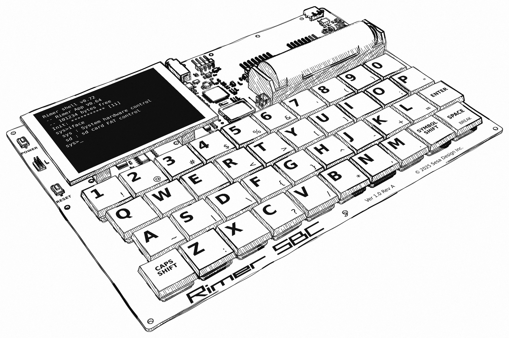
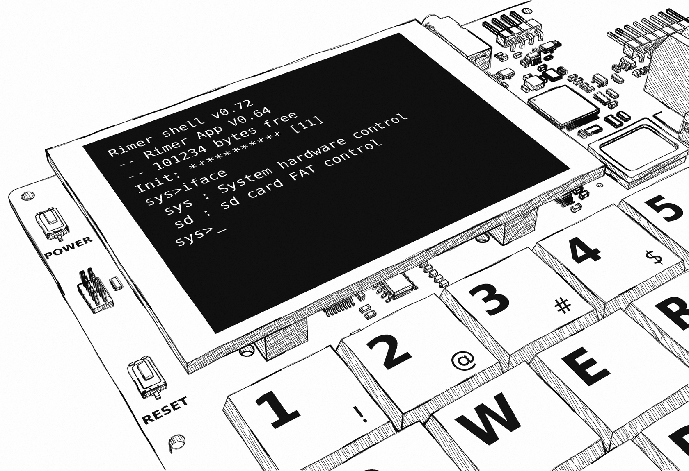
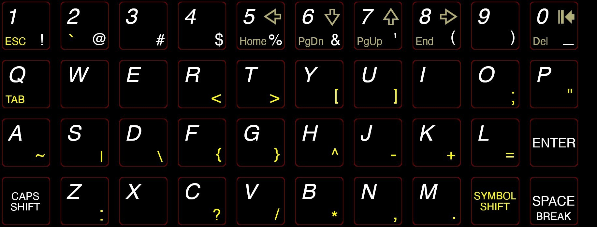

Rimer SBC
A pocket computer with a real keyboard, a fast colour screen and open ports. Built to write code on, measure things with, and play a game of Jetpac in between.
Meet Rimer
Rimer started as my bench tool. I needed a Cortex-M4 board I could program quickly, poke at serial devices with, and carry around without a laptop. It grew a keyboard, a colour screen and a battery, and turned into a small computer of its own.
It boots straight into a command shell. From there you can switch IO pins, talk SPI, UART or I2C to a sensor, read voltages, run scripts from the SD card, write BASIC programs, or load a ZX Spectrum game. Everything runs on one Microchip ATSAMD51 microcontroller at 120 MHz - there is no Linux and no boot time to speak of.

At a glance
| Processor | ATSAMD51J20A, ARM Cortex-M4F with FPU, 120 MHz |
|---|---|
| Memory | 1 MB Flash, 256 KB RAM, 64 KB EEPROM |
| Display | 3.2" IPS, 320 x 240, up to 60 fps |
| Keyboard | 40 low profile mechanical keys, ZX Spectrum layout |
| Ports | 2 x 8-pin SPORT (IO, SPI, UART, I2C, PWM), 1 x COMM (UART / I2C), SD card, 3.5 mm analog jack, USB-C |
| Power | USB-C or Li-Ion battery with onboard charger |
Full figures are in Appendix B.
Inside the board
Everything on Rimer hangs off one microcontroller. There is no separate graphics or USB chip - the MCU drives the display, scans the keyboard, runs the file systems and talks to the ports itself. Knowing which peripheral does what helps a lot once you start using the ports for your own projects.
Block diagram
Power
Rimer runs from USB-C, from the battery, or from both. With USB plugged in, the board runs from USB and charges the battery at the same time; unplug it and the battery takes over without a reset. The MCU can read both voltages, so a program always knows where its power comes from.
sys:off cuts VDD, dio:pwr and sio:pwr switch the ports.Each port has its own current limited switch with a fault output, and a red LED next to it shows an overload. A short on one port doesn't take the board down.
Display
The screen is a 3.2" IPS panel with an ST7789V2 (or ILI9341) controller. Instead of the usual slow SPI link, the MCU sends pixels over a 60 MHz SPI line that is deserialized on the board into the panel's parallel bus. The frame buffer lives in RAM as one byte per pixel (RGB 3-3-2, 75 KB) and a DMA channel pushes it to the panel continuously. Drawing is just writing to memory; the hardware does the rest at up to 60 frames per second.

Sound and analog
A 700 mW class-D amplifier (PAM8304) drives the onboard speaker from DAC channel 1. DAC channel 0 and one ADC input go to the 3.5 mm jack through an op-amp buffer, so the jack is an analog input and output, not a headphone socket. The second ADC watches the battery.
Software
The firmware is in two parts. ucosR is the operating system: the FreeRTOS kernel, drivers for everything on the board, the file systems and the shell. It is compiled separately into a library. The Rimer application sits on top and adds the interfaces for the ports, BASIC-D and the emulator.
Getting started
The kit comes with the board assembled and programmed. You only need to fit the display, put the keycaps on and plug in a USB-C cable. Ten minutes, and a screwdriver.
The kit
| Part | Qty |
|---|---|
| Main board | 1 |
| 3.2" LCD module | 1 |
| LCD brackets | 2 |
| M2 x 3 mm screws | 4 |
| Keycaps and key stickers | 40 |
You also need a USB-C data cable. A charge-only cable powers the board but the PC won't see it.
Fitting the LCD
- Fix the two brackets to the LCD module.
- Hold the module over the board and adjust the brackets until they line up with the PCB holes. Do this before you connect the cable - the FFC doesn't like being pulled.
- Open the locking tab of the LCD connector on the board.
- Slide the cable fully in and close the tab.
- Fix the brackets to the board with the four M2 x 3 mm screws.
First power on
Plug in the USB cable. The Rimer logo appears for a moment, then the shell starts and prints what it found:
Rimer shell v0.72 -- Rimer App V0.64 -- 101234 bytes free Init: *********** [11] sys>_
Every * on the Init line is an interface that started; a ! means one failed (usually the SD card, if there is none). The last line is the prompt. sys is the active interface - more about that in chapter 5.
Try a few commands. Type them and press ENTER:
sys>ver Rimer shell v0.72 -- Rimer App V0.64 sys>aio: aio>vbat 3.912 aio>set: set>bright 40 set>
aio: switches to the analog interface, where vbat reads the battery. set: switches to the settings, where bright sets the backlight. Chapter 5 explains interfaces.
Battery
The board takes a single Li-Ion cell: a flat 20 x 60 mm LiPo on the 2-pin JST PH connector, or an 18650 cell in the holder. It charges whenever USB is connected; the Charge LED is on while charging.
sys:off turns the board off. To switch it on again, press RESET on the left edge. The POWER button above it is reserved for a future firmware version.
The keyboard
The keyboard follows the ZX Spectrum layout: forty keys, no separate number pad or function row. Two shift keys, CAPS SHIFT and SYMBOL SHIFT, give every key up to four meanings. It looks tight on paper and is quick in practice.

Reading a key
| Hold | Letters | Digits |
|---|---|---|
| nothing | lower case | digits |
| CS | upper case | ! @ # $ % & ' ( ) _ |
| SS | the yellow symbol | cursor and editing keys |
| CS + SS | Ctrl + letter | Home, End, PgUp, PgDn, Delete |
Keys repeat when held. ENTER and SPACE work as expected.
Cursor and editing keys
| Keys | Function | Keys | Function |
|---|---|---|---|
| SS 5 | Left | SS 1 | Esc |
| SS 6 | Down | SS 0 | Backspace |
| SS 7 | Up | SS Q | Tab |
| SS 8 | Right | CS SS 0 | Delete |
| CS SS 5 | Home | CS SS 8 | End |
| CS SS 7 | Page up | CS SS 6 | Page down |
The keyboard sends standard VT100 sequences for these, so programs see the same codes they would get from a PC terminal.
Working with the shell
Everything on Rimer is done from the shell. There are no menus and no icons; you type a command and it runs. Commands are grouped by what they control, and once you know how the groups work, the rest follows.
Interfaces
A group of commands is called an interface. sd has the SD card commands, dio the digital IO commands, set the settings, and so on. iface lists them all:
sys>iface sys : System hardware control utl : Comand line utility set : System settings aio : Analog IO ports control dio : Digital IO ports control sio : Serial IO ports control eep : EEPROM llfs control sd : sd card FAT control bas : BasicD interpreter mem : Memory read/write zx : ZX Spectrum Emulator
The prompt shows the active interface. To change it, type the name with a colon. Rimer remembers the choice after power off.
sys>sd: sd>ls [ zx80 ] 1043 snake.bas 212 test.rs sd>
You don't have to switch to use a command. Put the interface in front of it:
sys>sd:ls
help (or ?) lists the commands of the active interface. help dio lists another one.
sys>help aio [ aio ] adc - ADC voltage dac - DAC voltage vbat - Battery voltage vio - Vio voltage beep - Beep
How a command is found
When you type a command without an interface name, the shell searches in a fixed order and runs the first match:
sd:ls skips the search and goes straight to the sd interface.The path is a list of interfaces you use often. Add sd to it and ls, cd and cat work from anywhere without the sd: prefix. Keep it short - every interface in the path is searched on every command, and two interfaces with the same command name (both sd and eep have ls) can't both be reached that way.
sys>path -a sd Saved: sd Path updated. sys>ls [ zx80 ] 1043 snake.bas 212 test.rs
path shows the list, path -d sd removes an entry, path -d * clears it.
More on the command line
A few characters change how a line is executed:
| Write | What it does |
|---|---|
a; b | runs a, then b |
a > b | pipe: what a prints becomes the last parameters of b |
@line | repeats the whole line until BREAK or an error |
# text | comment, nothing runs |
"two words" | one parameter, spaces and commas kept |
Parameters are separated by spaces or commas. A command that fails prints an E: message and the rest of the line is skipped.
aio interface, vbat > echo Battery: prints Battery: 3.912.Loops are handy for watching something. This prints the battery voltage once a second until you press BREAK:
sys>aio: aio>@vbat; utl:dly 1000 3.912 3.911 3.909 (CS + SPACE)
echo -u updates one line in place instead of scrolling:
aio>@vbat > echo -u Battery:; utl:dly 500 Battery: 3.911
Scripts and startup
A script is a text file on the SD card with one command line per line. Run it with rs. Scripts can call other scripts; a script that calls itself is refused.
# blink.rs - blink pin 0 of SPORT0 five times dio:chan 0 dio:dir 0 1 dio:pin 0 1; utl:dly 200; dio:pin 0 0; utl:dly 200 dio:pin 0 1; utl:dly 200; dio:pin 0 0; utl:dly 200 dio:pin 0 1; utl:dly 200; dio:pin 0 0 echo done
sys>rs blink.rs done
red is a small full-screen text editor for writing scripts and programs on the board itself: red blink.rs.
The startup line runs once after power on. Use it to set things up or to start your own script:
sys>set: set>startup "rs boot.rs"
Your settings
Colours, font, brightness, volume, the active interface and the startup line are saved in the EEPROM the moment you change them.
sys>set: set>fg yellow set>bg blue set>font 1
| Font | Size | Screen |
|---|---|---|
| 0 · Rimer | 8 x 12 | 40 x 20 characters (default) |
| 1 · Rimer | 6 x 8 | 53 x 30 |
| 2 · ZX | 8 x 8 | 40 x 30 |
| 3 · Serif | 8 x 8 | 40 x 30 |
| 4 · Speedway | 8 x 8 | 40 x 30 |
Colours are given by name or number: black blue red magenta green cyan yellow white are 0-7, and the same names in capitals are the bright versions 8-15 (8 is gray). The first letters are enough: set:fg y.
The IO ports
The ports are why I built Rimer. Each SPORT connector carries a full SERCOM and a timer, so the same six pins can be plain IO, SPI, UART, I2C or PWM. You switch between them from the shell, no reflashing.
Pinouts
dio and sio.Digital IO
dio uses the six signal pins of a SPORT as plain IO. Pins are numbered 0-5 in connector order: PAD0-PAD3 are pins 0-3, WO0 and WO1 are pins 4 and 5. The prompt shows the active port, dio:0>.
Switch the port power on, set pin directions, write outputs, read inputs:
sys>dio: dio:0>pwr on dio:0>dir 0 1 # pin 0 output 0x01 dio:0>pin 0 1 # pin 0 high 0x01 dio:0>pin # read all inputs 0x05
A pin number of 6 or more means "all pins" and the value is a bit mask. Binary works with a b in front:
dio:0>dir 6 b001111 # pins 0-3 outputs, 4-5 inputs 0x0f
dio:save stores the IO setup in the EEPROM.
Serial protocols
sio puts a port's SERCOM in SPI, UART or I2C mode. Choose the channel (0, 1 or 2 for COMM), the mode, and the bit rate:
sys>sio: OFF:0>chan 2 OFF:2>mode 3 # 0 OFF, 1 SPI, 2 UART, 3 I2C I2C:2>baud 400000 I2C:2>pwr on I2C:2>scan 0x76
The prompt always shows the mode and channel. tx sends up to seven bytes, rx receives. SPI runs up to 6 MHz; I2C at 100 kHz, 400 kHz or 1 MHz.
Analog IO
The 3.5 mm jack carries one analog input and one analog output, both 0 to 3.0 V.
sys>aio: aio>dac 1.5 1.500 aio>adc 1.498 aio>vbat 3.912
vbat and vio read the battery and the IO supply. beep plays a short tone at the volume set with set:vol.
Files and storage
Rimer has two places to keep files. The SD card holds your scripts, programs and games and can be read on any computer. The EEPROM on the board is small and holds the system settings; it survives without a card.
SD card
Use a FAT formatted card. The sd_sample folder in the release repository is a ready made card with BASIC examples and Spectrum games - copy it to the card's root.
sd>ls *.bas 1043 snake.bas 388 sine.bas sd>cat -n5 snake.bas sd>cd zx80 sd>pwd /zx80
rm asks before it deletes a single file. With a wildcard (rm *.tmp) it doesn't ask - be careful.
EEPROM and LLFS
The 64 KB EEPROM is formatted with LLFS, a small file system I wrote for this kind of memory. It is split into 256 sectors of 256 bytes. Index sectors hold the file names; data sectors are chained one after another, each one pointing to the next.
The system keeps three files there. You can list them with eep:ls:
| File | Holds |
|---|---|
.rimer.conf | colours, font, brightness, volume, active interface, startup line |
.io.conf | port setup saved with dio:save |
.path.list | the interface path |
If the EEPROM is blank or damaged, Rimer formats it at boot and writes the default settings. eep:format does the same on purpose - all settings go back to defaults.
The full LLFS description is on the LLFS page.
BASIC-D and ZX Spectrum
Two bigger programs come with the firmware. BASIC-D is my own BASIC interpreter, made for poking at hardware from a few lines of code. The ZX Spectrum 48 emulator is there because the keyboard was begging for it.
BASIC-D
Load a program from the SD card and run it:
sys>bas: bas>load snake.bas bas>run
list shows the program, var the variables, new clears it. bas starts the interpreter's own prompt for typing programs in. BREAK stops a running program.
The sample card has more than thirty examples - graphics (circ.bas, plot.bas), signal generators (sine.bas, saw.bas, pulsegen.bas), a voltmeter, a BME280 sensor reader and a few games.
ZX Spectrum 48
The emulator runs Spectrum snapshots (.z80 and .sna) at the original speed. The keyboard becomes a Spectrum keyboard - same layout, same shift keys.
All emulator files live in the /zx80 folder on the SD card: the Spectrum ROM 48.rom and the snapshots. The emulator changes to that folder by itself, so there is no need to cd there.
sys>zx: ZX Spectrum emulator Use "zx" to run zx>load Jetpac.z80
zx starts the emulator with the Spectrum ROM, or continues the last game. Press CS + SS + SPACE together to get back to the shell. load -d game.z80 opens the game in the Z80 debugger instead of running it.
Firmware
Rimer has a USB bootloader. Updating means copying one file to a drive, the same way you'd copy a photo to a USB stick. No programmer, no software to install.
Updating
- Download the latest
rimer_vX.XX.uf2from the images folder. - Connect Rimer to the PC with a USB data cable.
- Press reset twice, quickly. The bootloader screen appears and a drive named
RIMERBOOTshows up on the PC. It containsCURRENT.UF2,INDEX.HTMandINFO_UF2.TXT. - Copy the
.uf2file to the drive. The drive disappears when the copy is done and Rimer restarts with the new firmware.
Your settings and EEPROM files are kept.
Programming a blank board
Only needed on a new board or if the bootloader is damaged. You need an SWD programmer (I use a J-Link) on connector J1.
- Fit the LCD and connect USB.
- Connect the SWD programmer to J1.
- Program uf2.hex - this is the bootloader.
- The Rimer logo and the bootloader screen appear, and
RIMERBOOTshows up on the PC. - Copy the latest
rimer_vX.XX.uf2to it, as in an update.
Your own firmware
The firmware is split so that you don't have to build everything to add your own code. ucosR compiles into libucosR.a with the kernel, drivers and shell. An application links the library and registers its own interfaces:
#include "rshell.h"
static cmd_err_t cmd_hello(_cl_param_t *sParam)
{
tprintf("Hello, %s!\n", sParam->argc ? sParam->argv[0] : "Rimer");
return CMD_NO_ERR;
}
const _iface_t ifaceHello =
{
.name = "hi",
.prompt = NULL,
.desc = "My first interface",
.init = NULL,
.cmdList =
{
{ .name = "hello", .desc = "Say hello [name]", .func = cmd_hello },
{ .name = NULL, .func = NULL },
}
};
void interface_register(void) // overrides the weak one in ucosR
{
add_interface(&ifaceHello);
}
sys>hi: hi>hello world Hello, world!
A command gets its parameters in sParam and returns CMD_NO_ERR or an error string, which the shell prints after E:. Build with the ARM GCC toolchain, convert the binary with uf2conv (in the release repository) and copy it to RIMERBOOT.
Command reference
Square brackets are optional parameters. Numbers can be decimal or hex (0x1F).
/built-in, always availablehelp [iface] | list commands; ? is the same |
ver | shell and firmware version |
iface | list interfaces |
echo [-e|-h|-c|-u] text | print text. -e no new line, -h back to line start, -c clear the line first, -u clear and stay (update in place) |
path [-a list | -d list | -d *] | show, add to, remove from or clear the path |
cls | clear the screen |
rs file | run a script from the SD card |
red [file] | text editor |
syssystemreboot | restart |
off | power off |
utlutilitieshex value | print a number in hex |
dec b1 [b2 …] | make a number from a list of bytes |
dly ms | wait, in milliseconds |
setsettings, saved immediatelyfg colour | text colour, name or 0-15 |
bg colour | background colour, name or 0-15 |
bright [1-100] | backlight in %; without a value shows it |
font [0-4] | system font; without a value shows it |
vol 0-100 | speaker volume in % |
startup "line" | command line to run at power on |
aioanalog IOadc | input voltage on the jack, 0-3.0 V |
dac [volts] | set the output voltage 0-3.0 V; without a value shows it |
vbat | battery voltage |
vio | IO supply voltage |
beep | short beep |
diodigital IO, active port in the promptchan [0|1] | select the port |
pwr [chan] on|off | port 3.3 V on or off |
dir [pin [val [chan]]] | direction, 1 = output. Pin 6+ = all pins, value is a mask |
pin [pin [val [chan]]] | write an output; without parameters reads the inputs |
save | save the IO setup |
sioserial IO, mode and port in the promptchan 0|1|2 | select the port (2 = COMM) |
mode 0-3 | OFF, SPI, UART, I2C |
baud rate | bit rate. SPI up to 6 MHz, I2C 100k / 400k / 1M |
pwr on|off | port 3.3 V on or off |
tx b1 [… b7] | send up to 7 bytes |
rx size [mode/addr/tx] | receive bytes |
scan | list devices on the I2C bus |
sdSD cardls [pattern] | list files, * wildcards |
cd dir | change directory |
pwd | current directory |
cat [-v] [-nN] file | show a file; -v shows control characters, -nN only the first N lines |
rm file | pattern | delete; asks only for a single file |
sdi | card information |
sdrd block [count] | raw block dump |
eepEEPROM files (LLFS)ls [pattern] | list files and sizes |
df | free space |
rm name | pattern | delete |
touch name | create an empty file |
format | format; all settings are lost |
memmemoryeer addr [count] | EEPROM hex dump |
eew addr b1 [… b8] | write raw bytes to the EEPROM - can break LLFS |
mf | heap total, used, free |
basBASIC-Dload file | load a program from the SD card |
run | run it |
list | list it |
new | clear it |
var | list variables |
bas | interpreter prompt |
zxZX Spectrum 48zx [addr] | start or continue, optionally from an address |
load [-d] file | load a .z80 or .sna snapshot; -d opens the debugger |
dbg | Z80 debugger |
Specifications
| MCU | Microchip ATSAMD51J20A, ARM Cortex-M4F, 120 MHz from a 12 MHz crystal |
|---|---|
| Flash / RAM | 1 MB / 256 KB |
| EEPROM | 64 KB, CAT24C512, I2C |
| Display | 3.2" IPS TFT, 320 x 240, ST7789V2 or ILI9341, 40-pin 0.5 mm FFC, PWM backlight |
| Frame buffer | 8 bit per pixel (RGB 3-3-2), DMA refresh, up to 60 fps |
| Keyboard | 40 Kailh Choc low profile switches, PI4IOE5V9554 I2C scanner |
| Storage | microSD (SDHC 4-bit), 64 KB EEPROM with LLFS |
| Audio | PAM8304 class-D, 700 mW onboard speaker |
| Analog | 1 x ADC in, 1 x DAC out, 0-3.0 V, MCP6402 buffer, 3.5 mm jack |
| SPORT0, SPORT1 | 8-pin 2.54 mm, 6 signals each (SERCOM + 2 timer outputs), switched 3.3 V @ 300 mA with fault sense |
| COMM | 4-pin 2.54 mm, UART or I2C, 4k7 pull-ups, switched 3.3 V @ 125 mA |
| USB | USB 2.0 full speed device, USB-C |
| Power | USB-C 5 V or one Li-Ion cell (20 x 60 mm LiPo on JST PH-2, or 18650), MCP73832 charger, 3.3 V / 2 A buck |
| Programming | USB UF2 bootloader, SWD on J1 |
| Size | 200 x 140 mm, 1.6 mm PCB |
How the hardware works: hardware manual. Drawings (PDF): schematics · mechanical layout
More
- Hardware manual - every block of the schematics explained
- Rimer SBC on Hackaday
- Source code
- Release files - firmware images, sample SD card, uf2conv